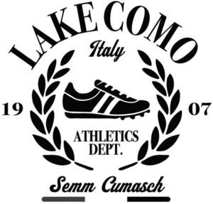

Trade Mark Journal No.2025/011 14 March 2025
WO0000001841849 (16,18,21,24,25,28,41)
Office of origin: European Union Intellectual Property Office (EUIPO)
Date of International Registration:18 November 2024
Date of designation in the UK:
18 November 2024

International priority date claimed: 16 October 2024
(European Union Intellectual Property Office (EUIPO))
(019092170)
- Class 16
- Diaries; notebooks and exercise book; paper stationery; pens; fountain pens; rollerball pens; pencils; felt pens; pen-holders not of precious metal; adhesive labels; stickers and transfers [decalcomanias]; flags made from paper; banners of paper; calendars; catalogues in the field of motorcycles and motorcycle accessories; paper atlases; brochures about travels, lifestyle and entertainment; booklets about travel, lifestyle and entertainment; document folders for cards and documents; albums for stamps, stickers, coins and photographs; magazines [periodicals] about travel, lifestyle and entertainment; lithographs; photographs; newspapers; printed periodicals in the field of travel, lifestyle and entertainment; books in the field of travel, lifestyle and entertainment; photographic prints, posters, postcards; erasers; cardboard boxes; agendas; photo albums; greeting cards; note pads; paper admission tickets for general use; envelopes; business cards.
- Class 18
- Wallets; purses; trunks; suitcases; beach bags; cosmetic bags, sold empty; Boston bags; handbags; traveling bags; briefcases; leather briefcases; leather credit card holders; leather document briefcases; key cases of leather and skins; sports bags namely, all-purpose sport bags, athletic bags and bags for mountain climbing, namely, backpacks and rucksacks; evening and shoulder bags for ladies; leather shopping bags; school bags; garment bags for travel; shoe bags for travel; diaper bags; traveling trunks; duffel bags; overnight bags; carry-on bags; satchels; opera bags; unfitted vanity cases; worked or semi-worked hides and other leather; leather cases and boxes; bags made of leather for packaging; leather straps; umbrellas; leather leashes.
- Class 21
- Napkin rings; bottle openers, electric and non-electric; cutting boards for the kitchen; drinking glasses; tankards; bottles; coffeepots, non-electric; shoe horns; decanters; window-boxes; flasks; signboards of porcelain or glass; majolica; table plates; powder compacts; knife rests for the table; soap holders; napkin holders; salt cellars; piggy banks; coffee services; ice pails; non-electric portable coolers; liqueur sets; tea services; spice sets; cruet sets for oil and vinegar; baking mats; cups; kitchen utensils; utensils for household purposes; toilet utensils; tableware, other than knives, forks and spoons; trays for domestic purposes; sugar bowls; pepper mills, hand-operated; corkscrews, electric and non-electric; thermally insulated bags for food or beverages.
- Class 24
- Face towels of textile; towels of textile; bath linen, except clothing; household linen; bed linen; table linen, not of paper; brocades; tablemats of textile; travelling rugs [lap robes]; blankets for household pets; labels of textile; handkerchiefs of textile; pillowcases; covers for cushions; flags of textile or plastic; sheets [textile]; sleeping bag liners; drugget; eiderdowns [down coverlets]; table runners, not of paper; sleeping bags; baby buntings; coasters of textile; banners of textile or plastic; cloth; oilcloth for use as tablecloths; curtains of textile or plastic; shower curtains of textile or plastic; fabric; place mats of textile; table napkins of textile; blankets.
- Class 25
- Jackets; jumpers; trousers; skirts; dresses; coats; overcoats; parkas; shirts; underwear; swim suits; dressing gowns; shawls; scarves; ties; shoes; heels; beach shoes; gymnastic shoes; boots; ski boots; half boots; sandals; bath sandals; visors (headwear); leather jackets; leather trousers; leather belts; belts; padded jackets; stuff jackets; jeans; sweaters; evening dresses; short-sleeved button-front shirts; sweatshirts; undershirts; polo shirts; blazers; sport shirts; rubber shoes; galoshes; golf shoes; basketball shoes; rugby shoes; boxing shoes; baseball shoes; track-racing shoes; work shoes; field hockey shoes; handball shoes; winter gloves; leather coats; leather skirts; leather tops; leather raincoats; leather long coats; leather overcoats; leather braces for clothing; suits; cloaks; raincoats; pullovers; T-shirts; blouses; baby doll pajamas; bathrobes; bathing costumes; negligees; nightgowns; one-piece dresses; two-piece dresses; neckties; gentlemen's suits; dress shirts; body suits; shorts; athletic shoes; slippers; overshoes; low heel shoes; leather shoes; wooden clogs; angler shoes; dress shoes; hiking shoes; lacquered shoes; inner soles; soles for footwear; footwear uppers; heelpieces for shoes and boots; non-slipping pieces for shoes and boots; tips for footwear; rain shoes; straw shoes; arctic boots; football boots; lace boots; esparto shoes or sandals; gloves; leather gloves; mittens; hats and caps; leather hats and caps.
- Class 28
- Games and playthings: board games, parlour games, ride-on toys, toy scale model kits, scale model vehicles, miniature models of motorbikes, automobiles and other vehicles, building blocks, building games, dolls, dolls' clothing, accessories for dolls, plush toys, toy vehicles; games and playthings: toy full-size motorbikes and automobiles replicas for entertainment purposes, jigsaw puzzles, hand held units for playing video games other than those adapted for use with external display screen or monitor, portable games with liquid crystal displays, arcade video game machines, radio-controlled toy vehicles, toys consisting of plastic race tracks; decorations and ornaments for Christmas trees; artificial Christmas trees; sporting articles; sports equipment.
- Class 41
- Publishing, reporting, and writing of texts; ticket reservation and booking services for education, entertainment and sports activities and events; education, entertainment and sport services; language translation; translation and interpretation; education, entertainment and sports; training in the field of advertising; film directing, other than advertising films; writing of texts, other than publicity texts; administration [organisation] of competitions; organizing cultural and arts events; organization of entertainment events; publishing services; creating animated cartoons; production of animated cartoons; multimedia publishing; music publishing services; journalism services; providing online comic books, not downloadable; providing online electronic publications, not downloadable; publishing of documents; publication of photographs; publishing services for books and magazines; entertainment agency services; cultural activities; lending library services; musical concerts by television; amusement centers; conducting of entertainment activities; conducting of cultural activities; discotheque services; artistic direction of performing artists; fan clubs; providing games; animal exhibitions for entertainment purposes; production of radio and television programmes; organising of festivals; amusement and theme parks, fairs, zoos and museums; audio, video and multimedia production, and photography; portrait painting; production of shows; cultural services; music composition services; songwriting; entertainment services; rental services relating to equipment and facilities for education, entertainment, sports and culture; video game services; education and instruction services; live performance services; sports and fitness services; tutoring; interpretation and translation services; arranging for ticket reservations for shows and other entertainment events; electronic games services; arranging of games; on-line gaming services; organisation of games and competitions; gambling services; interviewing of contemporary figures for entertainment purposes; interviewing of contemporary figures for educational purposes.
SENT RETAIL S.r.l.
Representative: JACOBACCI & PARTNERS S.P.A., Corso Emilia, 8, I-10152 Torino, ITALY